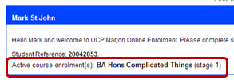
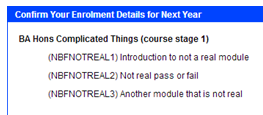
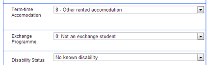
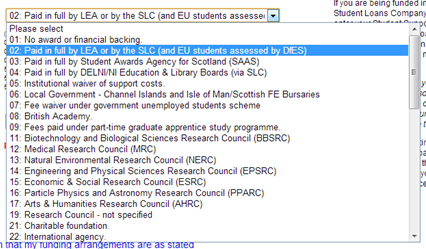
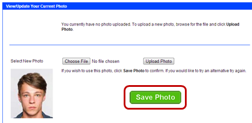
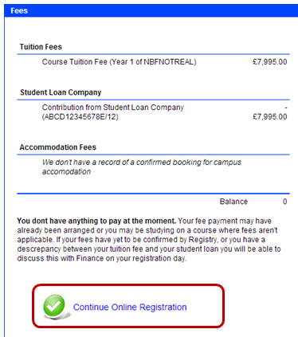
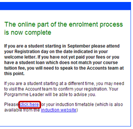
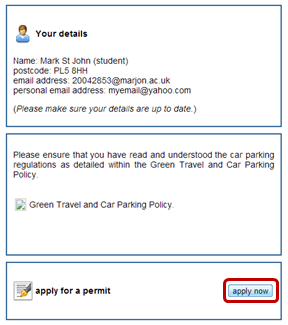

Marjon Induction - Enrol Online
This section will take through online registration step by step. We strongly recommend that you access the online registration system using a desktop computer or a laptop as the web forms that you will be asked to complete are best viewed on a larger screen and filled out using a physical keyboard. This section is designed to act as a guide to help you through the process.
Accessing the online registration system
Enter this web address into your web browser; http://www.marjon.ac.uk/onlinereg/
Enter your student number and your date of birth, be sure to use the correct date format and to include the forward slashes;
Click the login button.
Once you have successfully logged in you will see which course(s) yoi are actively enrolled in and you can now proceed through steps 1-5 to complete your online registration;
Step 1 - Confirming enrolment details
Click on step 1 of the online registration process entitled: 'Confirm Your Enrolment Details'.
Check the list of courses and module enrolments to the left of the screen;
If they are correct then you can continue to step 2 of the process by clicking the green confirmation button;
If there is a problem then please contact the Registry before you continue. They can be contacted on 01752 636746 or by email: registry@marjon.ac.uk
Once you have completed each step there will be a green tick next to the section, you can now move onto step 2 by selecting it;
Step 2 - Mandatory Data Requirements
In section 2, complete all of the questions on the page using the drop down boxes;
Once complete, click on the green confirmation button;
You will now see two green ticks next to steps 1 and 2.
Step 3 - Contact Details
Click on step 3.
Here you can verify your contact details, please make certain that your details are up to date. If you have a personal email address and mobile number be sure to use them;
Once complete, click on the green confirmation button;
Step 4 - Funding Arrangements
Click on step 4.
Using the drop down box, select how your studies are being funded *Usually your funding will be provided by your Local Education Authority (LEA) or by the Student Loans Company (SLC) however in certain circumstances you may be recieving a grant or award. If you are unsure of which option your fee provider falls under then contact the Registry team*;
Once complete, click on the green confirmation button;
Step 5 - Uploading a Photo
Click on step 5 - 'Upload You Photo'.
To upload your photo you will need to have an electronic copy of it saved on your computer. *As stated on the registration system, the photo should be up to date, clearly showing an unobstructed view of your face, with a white background. The file will need to be in a JPEG format.*
To begin click the 'Choose File' button;
Browse for the photo you want to upload and select it, then click 'Open';
The file you have chosen will appear next to the 'Choose File' button, next click on the 'Upload Photo' button;
The image that you selected will now be displayed, if you are happy with this photo and it follows the correct guidelines mentioned on the right of the screen then click on the green 'Save Photo' button;
Now continue to step 6.
Complete enrolment & Pay Fees
Finally you will be shown a breakdown of your fees, there will be a note below your balance informing you of any payments that do/do not need to be paid. If you are happy with these details, click on the green tick to continue;
Finally, you will be asked to confirm your enrolment by selecting the tick boxes to confirm that you have read, understood and agree to section 6.12 of the informaton booklet (clicking on the blue link on the left hand side at this point will take you to the correct documentation).
You can also select the tick box next to receiving information about becoming a Student Ambassador if you wish.
Click on the green 'Register' button to finish;
Completing the Process
You should now see green ticks against all five registration steps;
Now that you have completed the online part of your enrolment you can click on the blue 'click here' link to be taken to the Marjon website to view your induction timetable.
You can also visit step 7 for more information and clicking step 8 will take you to the online application form for a parking permit should you require one;
Good luck with your online registration and we look forward to welcoming you to the University of St mark & St John very soon!